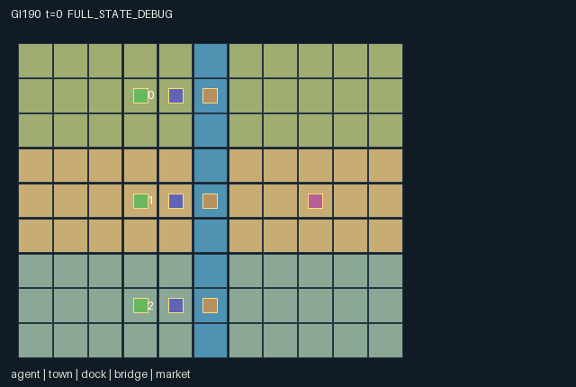

GI190 / SPATIAL
河谷水约
管理城镇粮食，协商上下游分水，建桥收费并用船运输真实货物。
Original saved demonstration
Recorded native state, often authored scripts or interventions; information scope and failures are preserved in the original provenance. This is a saved demonstration, not live browser play.

Release verification episode
Untrained uniform legal actions. Actual JAX state sampled along the full original episode; full-state debug camera. No human performance or learning claim.

Run this game
crucibles play --game 190
Start Python locally, then open the address printed by the terminal. Installation, multiplayer, takeover and keyboard controls →
Objective, rewards & ending
Exact task contract
{
"objective": "Manage a finite eight-flood river economy. Earn personal utility by eating grain or exporting it, while diversion, bridge access and shipments change other polities resources and opportunities.",
"natural_termination": "Natural completion is eight completed floods and no barge still in transit. Otherwise H=88 truncates, with natural priority and absorbing terminal state.",
"interaction": "Envoys walk the real map. Foreign bridge entry transfers a grain toll; sluice settings allocate a shared four-unit upstream flow; physical barges deliver downstream; town unloads transfer grain without gift reward.",
"observation_access": "Static terrain, settlement ownership by index, all physical positions, stocks, bridges and flow are public. Every role observes only its own reset taste. Fixed landmark coordinates are common map knowledge. No role gets another taste from a glyph or attribute."
}Declared per-step reward bounds: 0 to 10. Observability: partially_observable.
Rules
- Lead one of three river settlements. Use walk actions to move your cloaked envoy; all three players choose one native action per step.
- Stand on your town to load grain or eat it. Carry at most 2. Unload at any town to transfer grain, or sell at the eastern market.
- At your dock, build a bridge for 2 grain. An entering foreign envoy pays its owner 1 stored grain while its toll pennant is raised.
- At your dock, toggle diversion. Every eighth step four water units flow north to south; each diverting settlement takes up to 2 and grows that much grain.
- An open-sluice pledge costs 1 grain and locks diversion off for the next 2 floods. The remaining-flood counter is real state.
- Launch cargo at your dock: barges advance one river cell per step. Upper and middle shipments supply the next town; the lower barge exports at y=8.
- Granaries, satchels, sluice handles, bridge pennants and loaded boats show actual state. Ownership follows north-to-south role order.
- A role sees its own consumption taste. Human controls must use that role observation and native legal mask; fixed scripts are examples only.
- After the eighth flood, the game ends when outstanding boats arrive, or at the horizon. No successful replay or learned strategy is claimed.
Original mechanism document (historical status wording retained)
# River Charter — authored native game mechanism
Status: AUTHORED_NOT_EXECUTED. Assigned game-v3-00190; three agents; source attempt 00.
## Game and human interaction
River Charter is a square-grid territorial river strategy game for three polities. The upper, middle and lower settlements occupy (3,1), (3,4), (3,7); their docks are one cell east and their potential bridges are on river x=5. The eastern market is (8,4). The envoy is a mobile economic actor: position determines loading, construction, sluice manipulation, consumption, trade and crossing. Co-location is allowed; envoys do not block one another.
A human can select any legal joint integer action vector, walk with N/E/S/W, inspect the current mask and choose a contextual command. A player may switch controlled roles or choose all three commands before advancing one native step. The kernel contains no script lookup. Masks and observed stocks explain disabled commands. Human-session controls and native animation are subsequent integration work, not delivered or accepted here.
## Rules and exact chronology
Each polity starts with six stored grain, no cargo, a closed diversion that takes water, an unbuilt bridge and an enabled toll. Own consumption taste is sampled once from {1,2}, using only reset key. This is the only stochastic rule; raw_step is deterministic conditional on incoming state/actions and does not use its step key.
Masks are evaluated on the incoming state. Invalid or out-of-range actions become Wait. Movement resolves simultaneously from incoming bridge state; co-location is legal. Entering a foreign built bridge pays one stored grain when its toll is enabled. An owner crosses free. A bridge tile is usable only at its actual row; other river cells cannot be entered. There is no charging merely for standing on a bridge.
Nonmovement commands then build bridges, toggle diversion, purchase pledges, toggle tolls, load one grain, launch cargo, unload, eat or sell. Because each role chooses one command, it cannot both move and interact this step. Build costs two stored grain at the matching dock. A pledge costs one stored grain and forces diversion open for the next two floods; toggling is unavailable during it. Expiry leaves the setting open until changed deliberately.
All barges, including newly launched barges, then advance one y cell. Sender 0 lands at y=4 and supplies polity 1; sender 1 lands at y=7 and supplies polity 2. Sender 2 exports at y=8 for two utility per grain. Each sender has one physical barge slot. A land unload transfers cargo into the town underfoot, including own storage, and gives no reward.
Every eighth step, for at most eight floods, four water units pass upper to middle to lower. Each diverting polity takes min(remaining water,2) and adds that amount to its grain. An open gate takes none. Pledge counters decrement after flow. This is an explicit ordered resource process, with no negotiation solver. Eating yields own private taste per grain. Eastern market exports yield three per grain. Rewards are only these actual consumption/export payoffs.
Natural completion occurs once all eight floods have resolved and outstanding barges have arrived. Otherwise H=88 truncates. The actual terminal state, causes and clock are absorbing on future raw calls, with zero reward. No raw reset occurs.
## Why partners matter
An upstream envoy can retain water now or forego it for a downstream counterpart who can later return physical grain, build an accessible crossing or release another resource. A costly two-flood pledge is observable and constrains later choices. Toll income, cargo limits, walking distance and the export advantage create competing local consumption, transport investment and reciprocal-shipping strategies. A barge gift has no automatic social reward; any benefit to its sender depends on others future behavior.
The mechanism is an ordered river-allocation and transport economy. It is distinct from the road permits, orchard ecology and workshop production in the other assigned briefs. These are prospective strategy arguments, not proof of a nontrivial equilibrium, learnability, solution or transfer.
## Observation and visual charter
The 45 public columns expose normalized time, completed floods, source water, all envoy positions, grain/cargo, sluices/pledges, bridges/tolls, barge state, current flood allocation and scores. Three role bits and only the observing roles taste complete O=49. Exact slices and scales are in manifest.json. Static landmark coordinates and north-to-south ownership are public common knowledge. Tastes have no entity attribute, so a role renderer cannot display another roles taste.
Use a territorial-strategy treatment: original cloth-cloaked envoys, clay-roofed settlements, cultivated river terraces, timber bridge spans, toll pennants, sluice levers, canvas-covered grain barges and a market awning. Preserve the rectangular river topology. Material textures and character poses may decorate native geometry, but inventory, bridge availability, diversion state, motion and boat loads must come from manifest bindings. Unbuilt bridge sites should look unfinished rather than falsely passable. The scene supplies legal glyph bindings, literal rules, world, actions, attributes and events. Final artwork and interaction controls remain separate trusted integration.
## Bounds and declared invariants
All state leaves are fixed-shape int32 or bool. Positions stay in [0,10]x[0,8]. Total physical grain across storage, cargo and active barges is initially 18 and gains at most 32 from eight floods; construction, pledges, food and export remove grain. Transfers conserve it. Therefore an individual grain stock stays below 64. Cargo/boat load stay within 0..2, pledge within 0..2, season within 0..8, and diversion/toll are binary. Co-located agents are intentional, so there is no unique-position invariant. Normalized observations are in [0,1]. Returned reward lies in [0,10], a conservative algebraic bound, not a measured extremum.
## Source-derived diagnostics
The two literal scripts demonstrate intended sluice/transport affordances. The paired hypothesis changes only role 0 action at step 2, then waits until the first flood. Another politys resource state and observation are the intended comparisons. Seeds equal the assigned ordinal and were chosen once; no outcomes or seed search informed the scripts. Scripts are unexecuted author hypotheses, not successful play, an optimal policy or a restriction on human behavior.
## Complete native action dictionary
- 0: Wait.
- 1: Walk north.
- 2: Walk east.
- 3: Walk south.
- 4: Walk west.
- 5: Build own bridge: 2 grain at own dock.
- 6: Toggle own diversion at dock; unavailable during pledge.
- 7: Pledge open sluice for 2 floods: 1 grain at own dock.
- 8: Load 1 grain at own town; cargo capacity 2.
- 9: Launch all cargo downstream at own dock.
- 10: Unload all cargo into the town underfoot.
- 11: Toggle own bridge toll at own dock.
- 12: Eat 1 stored grain at own town.
- 13: Sell all carried grain at eastern market.
## Literal source-line evidence
- Movement and grain toll: candidate.py line 49; literal source: def destination(self, s, actions):
- Incoming legal context: candidate.py line 63; literal source: def legal_actions(self, s):
- Pledge and real transport: candidate.py line 100; literal source: n['pledge'] = jnp.where(pledge, 2, s['pledge'])
- Ordered shared flood: candidate.py line 137; literal source: for i in range(3):
- Natural terminal and absorption: candidate.py line 147; literal source: n['terminated'] = (n['season'] >= 8) & ~jnp.any(n['boat_active'])
- Flattened observation: candidate.py line 157; literal source: def observe(self, s):
## Provenance, reference use and verification limits
This is source attempt 00 of the original blind initial window, not a repair or feedback-selected revision. Current batch ordinals 186..193 were reserved inside the original cap 512; cumulative used-or-reserved count was 194 and feedback count was zero. This author owns only GI190..193 attempt_00 and does not alter other work. Exact actual input paths, byte sizes, hashes and purposes are in author_input_freeze.json, including the prospective human-playability addendum. All four assigned design/request pairs were read; no other candidate, result, selection, project training, develop/confirm, heldout, IR or final-test input was accessed.
The supplied official JaxMARL README informed a prospective dictionary-per-agent adapter boundary. Pgx informed explicit external random keys, masks and environment identity. Craftax README informed native spatial state/presentation and raw versus outer autoreset. PureJaxRL README and Craftax_Baselines_ppo_rnn.py informed only reset/step/scan integration. They are algorithm integration references, not new game libraries or replacements for the frozen learner. No upstream game, algorithm code or visual asset was copied. No network request, model/API invocation, remote session, credential inspection, download or candidate execution was performed.
Signed enums, counters and ownership fields use lossless int32; state booleans use bool. The supplied reset key is not duplicated inside state. This representation adaptation does not imply changing an executed earlier distribution. Each new private-parameter distribution is stated above. Raw terminal semantics follow the addendum: a live call advances t once, natural termination overrides horizon, and an already-done call preserves state/observation/time/cause with zero rewards.
Only stdlib AST, JSON and hash checks were authorized. No candidate or JAX import, eager call, JIT, vmap, rollout, random policy, seed search, replay, RGB render, adapter test or training was run. Shapes/dtypes, masks over trajectories, numerical parity, invariant preservation and paired effects await independent frozen-source integration. Positive, zero, negative, failed and indeterminate results remain valid reports. No reward, seed-count or success-rate acceptance threshold is introduced. Source authorship is not human-playability acceptance or evidence of learning/transfer.
Commands
Roles & abilities
agent_0 Upper-river polity envoy
agent_1 Middle-river polity envoy
agent_2 Lower-river polity envoy
Observation permissions
Training receives only the original observation rows. Role cameras use declared visibility; debug cameras are explicitly marked. Local benchmark records log debug exposure and role takeover history.
Exact observation layout
[
{
"slice": [
0,
3
],
"meaning": "Public t/88, completed floods/8, source water/4",
"visibility": "public"
},
{
"slice": [
3,
9
],
"meaning": "Public envoy x/10,y/8, ordered roles 0,1,2",
"visibility": "public"
},
{
"slice": [
9,
12
],
"meaning": "Town grain/64, roles 0,1,2",
"visibility": "public"
},
{
"slice": [
12,
15
],
"meaning": "Envoy cargo/2",
"visibility": "public"
},
{
"slice": [
15,
18
],
"meaning": "Diversion settings: 0 release, 1 divert",
"visibility": "public"
},
{
"slice": [
18,
21
],
"meaning": "Open-sluice pledge floods remaining/2",
"visibility": "public"
},
{
"slice": [
21,
24
],
"meaning": "Bridge built flags",
"visibility": "public"
},
{
"slice": [
24,
27
],
"meaning": "Bridge tolls, 0 or 1",
"visibility": "public"
},
{
"slice": [
27,
33
],
"meaning": "Barge x/10,y/8, indexed by sender; inactive slots remain declared",
"visibility": "public"
},
{
"slice": [
33,
36
],
"meaning": "Barge active flags",
"visibility": "public"
},
{
"slice": [
36,
39
],
"meaning": "Grain on each barge/2",
"visibility": "public"
},
{
"slice": [
39,
42
],
"meaning": "This-step flood intakes/2; zero off flood steps",
"visibility": "public"
},
{
"slice": [
42,
45
],
"meaning": "Cumulative utility/256",
"visibility": "public"
},
{
"slice": [
45,
48
],
"meaning": "Own role one-hot",
"visibility": "self"
},
{
"slice": [
48,
49
],
"meaning": "Own grain-consumption taste/2; other tastes withheld",
"visibility": "self"
}
]Entity visibility & attributes
[
{
"id": "agent",
"kind": "agent",
"count": 3,
"position": [
"agent_pos"
],
"active": [
"agent_active"
],
"visibility": [
"agent_visibility"
],
"attributes": [
{
"state_path": [
"grain"
],
"meaning": "Stored grain",
"display": "number"
},
{
"state_path": [
"cargo"
],
"meaning": "Carried grain",
"display": "number"
},
{
"state_path": [
"score"
],
"meaning": "Consumed/export utility",
"display": "number"
}
]
},
{
"id": "town",
"kind": "landmark",
"count": 3,
"position": [
"town_pos"
],
"active": [
"town_active"
],
"visibility": [
"town_visibility"
],
"attributes": [
{
"state_path": [
"grain"
],
"meaning": "Town granary",
"display": "number"
}
]
},
{
"id": "dock",
"kind": "gate",
"count": 3,
"position": [
"dock_pos"
],
"active": [
"dock_active"
],
"visibility": [
"dock_visibility"
],
"attributes": [
{
"state_path": [
"divert"
],
"meaning": "Diversion: 0 release, 1 take up to 2",
"display": "category"
},
{
"state_path": [
"pledge"
],
"meaning": "Floods still committed open",
"display": "number"
}
]
},
{
"id": "bridge",
"kind": "gate",
"count": 3,
"position": [
"bridge_pos"
],
"active": [
"bridge_active"
],
"visibility": [
"bridge_visibility"
],
"attributes": [
{
"state_path": [
"built"
],
"meaning": "Bridge constructed",
"display": "flag"
},
{
"state_path": [
"toll"
],
"meaning": "Foreign entry toll: grain units",
"display": "number"
}
]
},
{
"id": "boat",
"kind": "object",
"count": 3,
"position": [
"boat_pos"
],
"active": [
"boat_active"
],
"visibility": [
"boat_visibility"
],
"attributes": [
{
"state_path": [
"boat_load"
],
"meaning": "Grain aboard",
"display": "number"
}
]
},
{
"id": "market",
"kind": "landmark",
"count": 1,
"position": [
"market_pos"
],
"active": [
"market_active"
],
"visibility": [
"market_visibility"
],
"attributes": []
}
]Actual verification & provenance
Per-game execution receipt
{
"game": "gi190",
"status": "PASS",
"verification_revision": 2,
"source_sha256": "86f9f8fa43ec4f1331a753ef095c4f7d7c0e001374a2e58b7a02f93eceb87dac",
"seed": 20261101,
"runtime": {
"jax": "0.4.38",
"numpy": "1.26.4",
"devices": [
"TFRT_CPU_0"
]
},
"dimensions": {
"num_agents": 3,
"observation_size": 49,
"num_actions": 14,
"max_steps": 88
},
"checks": {
"eager_reset": {
"status": "PASS",
"seconds": 2.863689661026001
},
"observation_spaces_legal_masks": {
"status": "PASS",
"seconds": 3.750215768814087
},
"eager_step": {
"status": "PASS",
"seconds": 2.646343946456909
},
"jit_reset": {
"status": "PASS",
"seconds": 0.3753507137298584
},
"jit_step": {
"status": "PASS",
"seconds": 1.2616932392120361
},
"eager_jit_integer_parity_float_measurement": {
"status": "PASS",
"seconds": 0.0005145072937011719
},
"jit_vmap_reset": {
"status": "PASS",
"seconds": 0.4158661365509033
},
"jit_vmap_step": {
"status": "PASS",
"seconds": 1.0202555656433105
},
"outer_autoreset_api": {
"status": "PASS",
"seconds": 1.2627151012420654
},
"full_original_horizon_episode_and_render": {
"status": "PASS",
"seconds": 1.4824583530426025
}
},
"human_scores": null,
"browser_controls": "PENDING",
"failures": [],
"elapsed_seconds": 17.058719635009766,
"float_parity_max_abs": 0.0,
"numerical_parity": "EXACT",
"raw_terminal_absorbing": "PASS",
"terminal_outer_reset": "PASS",
"episode_steps": 64,
"scripted_random_returns": [
1.0,
3.0,
0.0
],
"terminal": true,
"demo_information": "FULL_STATE_DEBUG",
"demo_frames": 23,
"render_roles_checked": 3
}Chromium control verification
{
"game": "gi190",
"status": "PASS",
"human_scores": null,
"engineering": true,
"checks": [
"catalog_selected_and_real_native_reset",
"dom_queue_and_native_step",
"second_participant_ownership_and_native_joint_step",
"all_roles_individually_controllable_no_role_cap",
"explicit_debug_camera",
"release_to_pure_ai_without_reset"
],
"seconds": 5.452751636505127
}Original identity and file hashes
{
"id": 190,
"key": "gi190",
"title": "河谷水约",
"summary": "管理城镇粮食，协商上下游分水，建桥收费并用船运输真实货物。",
"tags": [
"河流策略",
"上下游资源"
],
"family": "spatial",
"dimensions": {
"num_agents": 3,
"observation_size": 49,
"num_actions": 14,
"max_steps": 88
},
"source_sha256": "86f9f8fa43ec4f1331a753ef095c4f7d7c0e001374a2e58b7a02f93eceb87dac",
"manifest_sha256": "72327895ca034ec9293c5b13c2a163b915d79ee2977fb46dfac2daf94bc76916",
"files": [
{
"file": "candidate.py",
"sha256": "86f9f8fa43ec4f1331a753ef095c4f7d7c0e001374a2e58b7a02f93eceb87dac",
"bytes": 9800,
"origin": "work/exp_2/game_incubator_v3/community_games222_225_visualization_root222_v1/native154_candidate/registry/v2/games/game-v3-00190/candidate.py"
},
{
"file": "manifest.json",
"sha256": "72327895ca034ec9293c5b13c2a163b915d79ee2977fb46dfac2daf94bc76916",
"bytes": 15526,
"origin": "work/exp_2/game_incubator_v3/community_games222_225_visualization_root222_v1/native154_candidate/registry/v2/games/game-v3-00190/manifest.json"
},
{
"file": "scene.json",
"sha256": "8cd1ad5f66fd4c49c84f57fe7494a8c6bf5ceb3623c4e8e5a80a92b1c3dff216",
"bytes": 8903,
"origin": "work/exp_2/game_incubator_v3/community_games222_225_visualization_root222_v1/native154_candidate/registry/v2/games/game-v3-00190/scene.json"
},
{
"file": "mechanism.md",
"sha256": "b9553ed2ba1659f828622d081b869a4f056a00525972dcde01f32eb30433601a",
"bytes": 10169,
"origin": "work/exp_2/game_incubator_v3/sources/game-v3-00190/attempt_00/mechanism.md"
},
{
"file": "playthrough.json",
"sha256": "c060701f0a5b075622bc173a66f2362e76b9de0db05db0d16fb1d60556743667",
"bytes": 4127,
"origin": "work/exp_2/game_incubator_v3/sources/game-v3-00190/attempt_00/playthrough.json"
}
],
"original_status": "NATIVE154_REFERENCE",
"original_saved_replay": true,
"release_validation": "PASS",
"human_scores": null,
"browser_validation": "PASS"
}